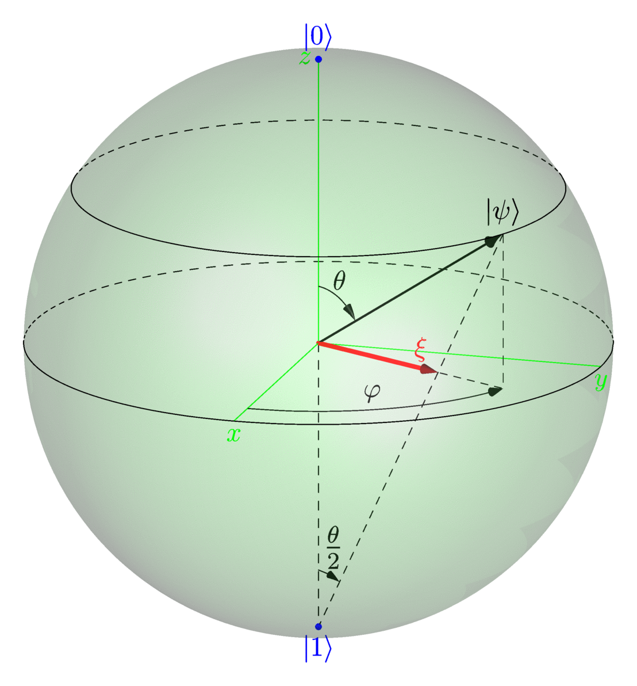

-
La sphère de Bloch
2015-12-15
SourceL’état quantique le plus simple est le qubit (aussi écrit qbit en français). C’est un état quantique “à deux niveaux”. Dans le contexte de l’informatique quantique ou de la théorie de l’information quantique, il est l’analogue du bit en informatique classique ou en théorie de l’information classique.
Un qubit \({\left|{\psi}\right\rangle}\) est représenté par un vecteur dans le plan complexe \(\mathbb{C}^2\) \[ {\left|{\psi}\right\rangle} = v_0 {\left|{0}\right\rangle} + v_1 {\left|{1}\right\rangle} = v_0 \begin{pmatrix} 1 \\ 0 \end{pmatrix}+ v_1 \begin{pmatrix} 0 \\ 1 \end{pmatrix} = \begin{pmatrix} v_0 \\ v_1 \end{pmatrix} \] où \(v_0\) and \(v_1\) sont des nombres complexes satisfaisant \({|v_0|}^2+{|v_1|}^2=1\). On dit que \({\left|{\psi}\right\rangle}\) est un vecteur normalisé en raison de cette contrainte.
L’espace des qubits est alors de dimension \(3\) : écrivant \(v_k = x_k + {\rm i} y_k\) on peut vérifier que le quadruplet \((x_0,y_0,x_1,y_1)\) est sur la sphère unité de dimension \(3\) dans l’espace réel euclidien de dimension \(4\).
Cependant, il est possible de ne considérer qu’un espace de dimension \(2\) en se restreignant aux qubits dits purs. Un qubit pur est en fait un représentant d’une classe de qubits équivalents pour la relation de proportionnalité : \({\left|{\psi}\right\rangle} \sim {\left|{\psi'}\right\rangle}\) lorsque \[ {\left|{\psi'}\right\rangle} = z {\left|{\psi}\right\rangle} = \begin{pmatrix} zv_0 \\ zv_1 \end{pmatrix} \] ou le facteur de proportionnalité \(z\) est un nombre complexe. Notez que \(z\) est nécessairement de module \(1\), c’est-à-dire de la forme \(z=e^{i\alpha}\), et un tel facteur est appelé facteur de phase.
Puisqu’il existe un unique angle \(\theta \in [0,\pi]\) tel que \[ |v_0| = \cos\frac{\theta}{2} \quad \text{et } \quad |v_1| = \sin\frac{\theta}{2}, \] on peut alors toujours écrire \[ \boxed{{\left|{\psi}\right\rangle} = \cos\dfrac{\theta}{2} \lvert 0\rangle + \sin\dfrac{\theta}{2} e^{i\varphi} \lvert 1\rangle} \qquad (\star) \] modulo un facteur de phase. Les qubits purs sont les qubits de cette forme. Alternativement, on peut aussi utiliser aussi la représentation
\[ {\left|{\psi}\right\rangle} = \cos\frac{\theta}{2} e^{-i\frac{\varphi}{2}} \lvert 0\rangle + \sin\frac{\theta}{2} e^{i\frac{\varphi}{2}} \lvert 1\rangle. \]La motivation à considérer des qubits comme étant équivalents lorsqu’ils diffèrent par un facteur de phase est le fait que deux tels qubits définissent la même “logique probabiliste” via le principe de Born. Autrement dit, la loi de probabilité quantique définie par un qubit \({\left|{\psi}\right\rangle}\): \[ \Pr\bigl(A = a_k ; {\left|{\psi}\right\rangle}\bigr) := \langle \psi, A\psi \rangle \quad \textrm{($A$ opérateur auto-adjoint)} \] ne change pas lorsqu’on multiplie \({\left|{\psi}\right\rangle}\) par un facteur de phase. En ce sens, on ne commet pas vraiment de restriction en ne considérant que des qubits purs.
L’espace des qubits purs est de dimension \(2\), et il peut être représenté par une sphère, appelée sphère de Bloch, mais qui n’est rien d’autre que la sphère de Riemann. Les angles \(\theta\) et \(\varphi\) correspondent aux coordonnées sphériques polaires de \({\left|{\psi}\right\rangle}\) sur cette représentation (respectivement la latitude et la longitude) :

En inteprétant naïvement cette représentation, on aurait évidemment tort de penser que \({\left|{1}\right\rangle}=-{\left|{0}\right\rangle}\), comme le suggère cette représentation euclienne. De même, l’expression \((\star)\) du qubit pur \({\left|{\psi}\right\rangle}\) comme une combinaison linéaire des deux états de base \({\left|{0}\right\rangle}\) et \({\left|{1}\right\rangle}\) ne signifie pas que cette même combinaison linéaire a lieu dans l’espace tridimensionnel.
L’isomorphisme entre l’espace des qubits purs et la sphère de Bloch se justifie de la façon suivante. Il repose sur le vecteur \(\xi\) dessiné en rouge sur la figure, qui est la projection stéréographique de (la représentation de) \({\left|{\psi}\right\rangle}\). Notez que sur ma figure, pour des raisons esthétiques, la projection stéréographique part du pôle Sud, alors qu’on la fait plus habituellement partir du pôle Nord.
L’espace des qubits purs précédemment définis comme des classes d’équivalence est l’espace des rayons projectifs de l’espace de Hilbert \(\mathbb{C}^2\), aussi appelé la droite projective complexe, et noté \(\mathbb{C}\mathbb{P}^1\) ou \(\mathbb{P}^1(\mathbb{C})\). Il est bien connu que la droite projective complexe est isomorphe l’espace \(\bar{\mathbb{C}}\) des nombres complexes augmenté d’“un point à l’infini” (le compactifié d’Alexandroff de \(\mathbb{C}\)). Cet isomorphisme envoie le qubit pur \({\left|{\psi}\right\rangle}\) sur \[ \xi = \frac{v_1}{v_0} = \tan\frac{\theta}{2} e^{i\varphi}, \] que nous appelons aussi la projection stéréographique de \(\xi\). Par ailleurs, il est bien connu que la projection stéréographique est un isomorphisme de la sphère de Riemann sur \(\bar{\mathbb{C}}\). Le lecteur mathématicien exigeant plus de détails pourra consulter cette fiche sur la droite projective complexe.
Ainsi la représentation de \({\left|{\psi}\right\rangle}\) sur la sphère de Bloch est justifiée par le fait que sa projection stéréographique coïncide avec la projection stéréographique de \({\left|{\psi}\right\rangle}\) définie ci-dessus.
La sphère de Bloch avec Asymptote
J’ai dessiné la sphère de Bloch avec Asymptote. Le code utilisé est donné ci-dessous.
settings.render=4; settings.outformat="gif"; // import modules import graph3; import three; import solids; // overall settings currentprojection=orthographic(20,6,6); viewportmargin=(10,10); size(10cm); currentlight=((3,3,0)); // variable parameters real r=2; real theta1=0, theta2=57; real phi1=0, phi2=65; // axes xaxis3("$x$",0,r,green); yaxis3(YZ()*"$y$",0,r,green); zaxis3("$z$",0,r,green); // sphere revolution ball = sphere((0,0,0), r); surface sball=surface(ball); draw(sball, lightgreen+opacity(0.2)); // sections skeleton s; ball.transverse(s,reltime(ball.g, 0.5),P=currentprojection); ball.transverse(s,reltime(ball.g, (180-theta2)/180),P=currentprojection); draw(s.transverse.front, solid+black); draw(s.transverse.back, dashed+black); // |psi> triple pA = r*dir(theta2,phi2); label("$| \psi \rangle$", pA, N); // projection on the (xy)-plane triple projA = r*sin(theta2*pi/180)*dir(90, phi2); draw(O--projA--pA, dashed); draw(O--pA, black+linewidth(1pt), Arrow3(HookHead3, size=2.5mm, angle=15)); // angles path3 arc1=arc(O, r/5, theta1, phi2, theta2, phi2); draw(arc1, black, Arrow3); triple labelpos_theta = r/5*dir(theta2/2,phi2); label("$\theta$", labelpos_theta, N); path3 arc2=arc(O, r*sin(theta2*pi/180), 90, phi1, 90, phi2); draw(arc2,black,Arrow3); triple labelpos_phi = r*sin(theta2*pi/180)*dir(90,phi2/2); label("$\varphi$", labelpos_phi, NW); // poles triple spinup = (0,0,-r); dot("$|1\rangle$", spinup, S, blue); triple spindown = (0,0,r); dot("$|0\rangle$", spindown, N, blue); draw(O--spinup--pA, dashed); path3 arc3=arc(spinup, r/5, theta1, phi2, theta2/2, phi2); draw(L=Label(scale(1.3)*"$\frac{\theta}{2}$", position=Relative(0.7), align=N), arc3, Arrow3); // stereographic projection triple ksi = r*tan(theta2/2*pi/180)*dir(90, phi2); draw(O--ksi, red+linewidth(2pt), Arrow3(red, angle=15, size=3mm)); label("$\xi$", 0.9*ksi, NNW, red);
- Home
- About
- PoirotReproducible Blogging with R Markdown
- SlidifyReproducible html5 slides from R markdown
- R-bloggersBlog posts about R, contributed by R bloggers worldwide.
- stla.overblogMy previous blog
- Timely Portfolio A great blog about R, Javascript, and more